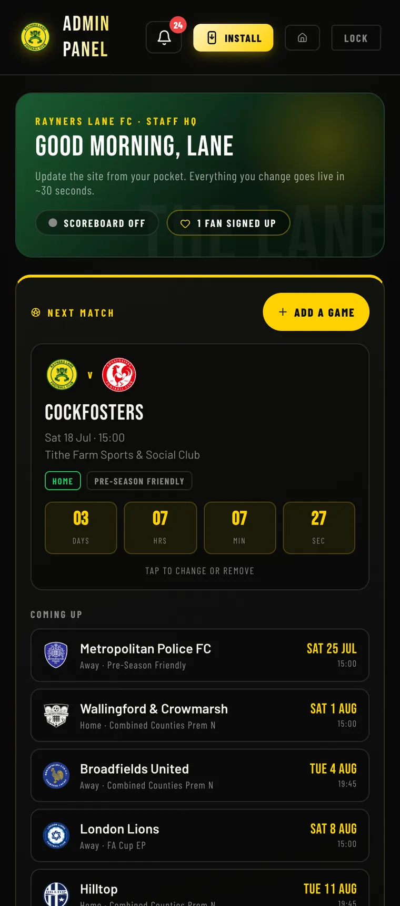
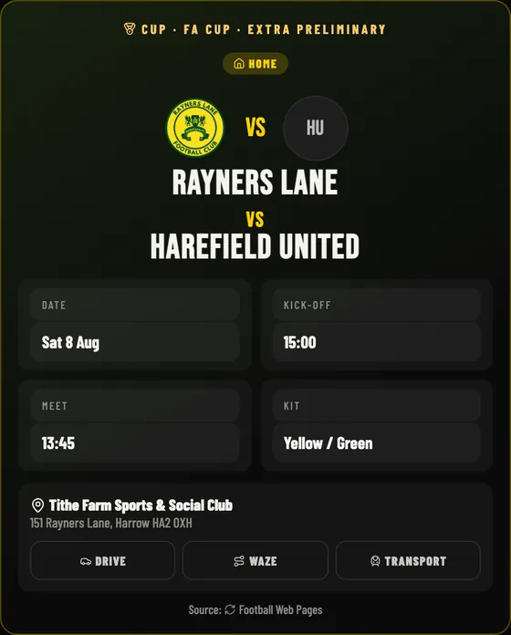
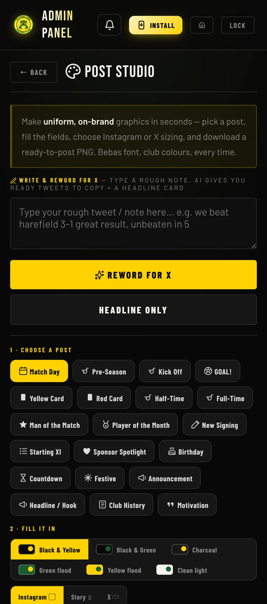
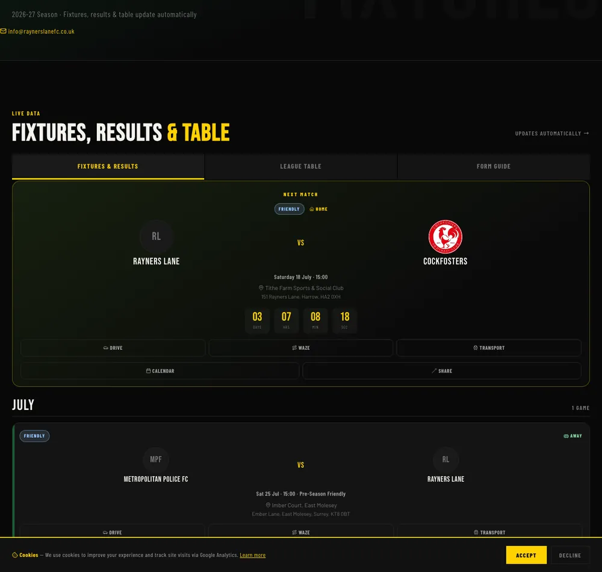
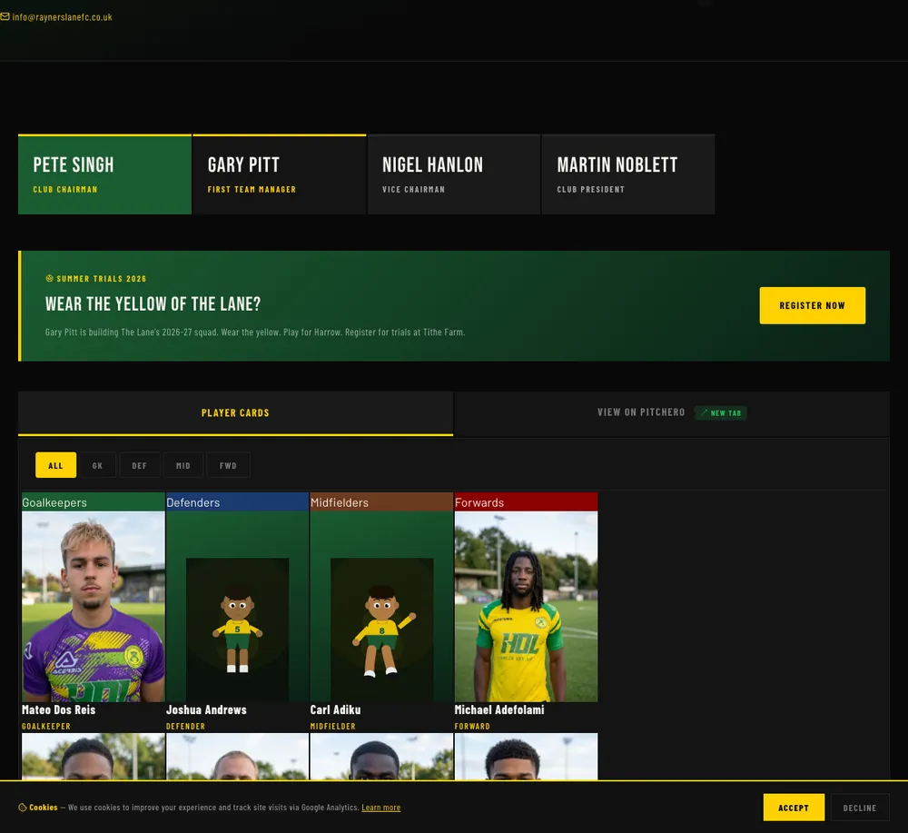

A Step 5 club running like a top-flight operation, with technology most clubs three or four divisions above don’t have. Built by volunteers. Run from a phone. No agency, no dev team, no budget.
We’re not waiting for permission to be a modern football club.
Rayners Lane is independent, volunteer-run and ninety-odd years deep in Harrow. We can’t outspend anyone, so we out-built them instead. Everything on this page is live right now, made in-house, running every week. This is what a community club can be once it stops accepting that “non-league” means “behind”. Partner with us and you’re not renting space on a shirt. You’re taking a stake in the story other clubs are already copying.
Thirty-seven tools in one place. Fixtures, squad, news, programme, sponsors, the shop, match day, analytics. Every word and image on this website is published by a committee member on their phone, in seconds. No developer. No agency. No waiting.

Installable on any phone. The manager asks the squad, the squad answers, the team gets picked, everyone checks in at the ground, and players send private feedback straight to the staff. Push alerts land the moment anything changes. It works offline, because signal at a Step 5 ground is a theory rather than a fact.

Match-day graphics, goal cards, signings, results. On-brand, in seconds, with every league crest loaded. Type rough match notes and the AI rewrites them into a finished social post. Upload a player photo and the background removes itself for the player card. One volunteer with a phone produces what a club three divisions up pays an agency for.

Goals go to supporters’ phones as they happen, with a live scoreboard across the site. The season, the league table and every result sync from official data automatically. Add the fixtures to your phone’s calendar in one tap. All nineteen away grounds carry a verified address and one-tap directions.

An EFL-standard digital programme, generated from live club data: the squad, the fixture, the table, the sponsors. Readable online and ready to print. The squad page carries every player’s profile and photo. Nobody rebuilds it each week. It’s current because the club is current.

Supporters get a digital member card, rewards, and QR check-in at the turnstile. The whole club is also structured so AI assistants like ChatGPT, Perplexity and Google’s AI can read it and answer questions about Rayners Lane correctly, wherever in the world someone asks. Most clubs haven’t noticed that’s now how people search.
Sponsoring a non-league club usually means your name on a board nobody photographs. Here, your brand goes inside the machine, rendered natively into everything the club produces, every week, automatically.
“The most advanced club in non-league” is a story that travels. To rival clubs, to press, to people who’d never otherwise look at Step 5. Your brand sits inside a genuinely differentiated club, not a generic one.
Your brand built natively into auto-generated match graphics, the digital programme, player cards and the app. Not bolted on. When the engine produces, your brand produces with it.
Post Studio and the automation mean content goes out constantly through the season: every fixture, every goal, every signing. A static board is visible on Saturday. This is visible all week.
Put your name on a player’s profile, their squad card, and the graphic that goes out every time they score. A season-long association with someone supporters actually follow.
Everything is digital, so everything is countable: app installs, check-ins, member cards, calendar subscribers, site traffic. We report what we can actually measure, and we won’t quote you a number we can’t stand behind.
Ninety-odd years in Harrow. Volunteers, families, players who grew up here. That’s who your brand stands next to on a Saturday, and the tech is how they hear about you all week.
One thing you won’t find on this page: made-up numbers. No “10,000 fans”, no reach figures, no engagement percentages. Every capability above is live and we’ll happily show you it working. When we have audited figures worth quoting, we’ll quote them, and not before. We’d rather you trusted the ones we do give you.
We’re a Step 5 club in Harrow with no money and a lot of nerve. If that’s the kind of thing your brand wants to stand next to, come and talk to us.